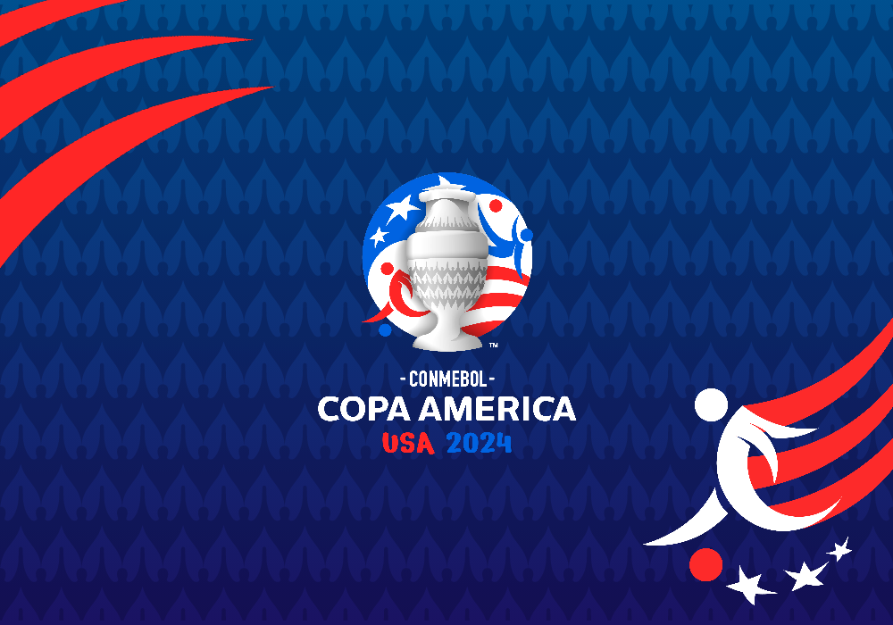
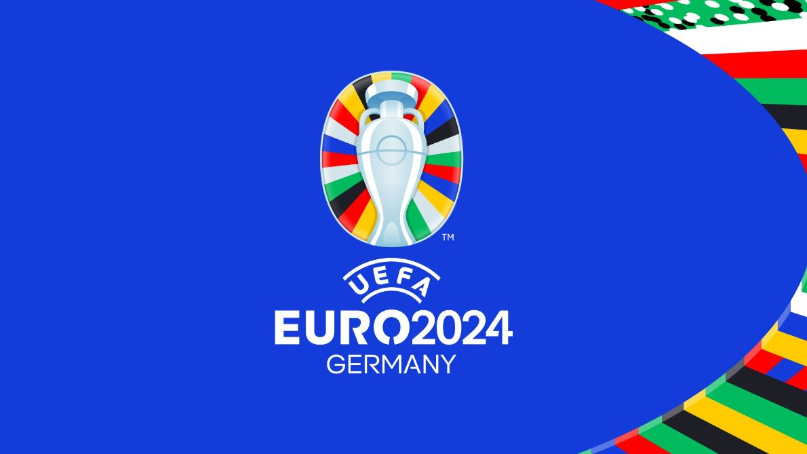

Eventos y competiciones más importantes
Torneos de Selecciones (La gloria del país) Copa Mundial de la FIFA: Es la joya de la corona. Se juega cada cuatro años y es donde las selecciones de todo el mundo se baten para ver quién manda. La próxima edición será la Copa Mundial de la FIFA 2026, que por primera vez se jugará en tres países: Canadá, México y Estados Unidos. Copa América: El torneo de selecciones más antiguo del mundo. Aquí en Sudamérica nos damos "serrucho" por el trono, con potencias como Argentina (actual campeón) y Brasil liderando la historia. Eurocopa: Básicamente un mundial pero sin Brasil ni Argentina. Es el torneo donde las potencias europeas demuestran quién tiene el mejor fútbol táctico y físico.

